RTR: Imperium Surrectum
RTR: Imperium SurrectumSpartan officers and generals
2025-05-12 · Tarnholm
Greetings, strategists and commanders!
Welcome back to our developer diary series, where today we cast the spotlight on the very architects of your future victories (or glorious last stands!): the new, newly crafted officer and general models for the indomitable forces of Sparta!
In our quest to forge an immersive and historically inspired Sparta, we recognised that commanding, distinctive leadership figures are not just important—they are paramount. These are the very individuals upon whom your hopes will rest, whether you're manoeuvring them across the sprawling strategy map of the ancient world or watching them hold the line at the heart of a desperate phalanx. Our goal has always been to deliver an experience steeped in historical accuracy. For Sparta, this demanded a move far beyond generic appearances. It meant sculpting leaders who embody the fierce spirit and iconic look of Lacedaemonian warriors, ensuring their presence on both the campaign map and battlefield is unforgettable.
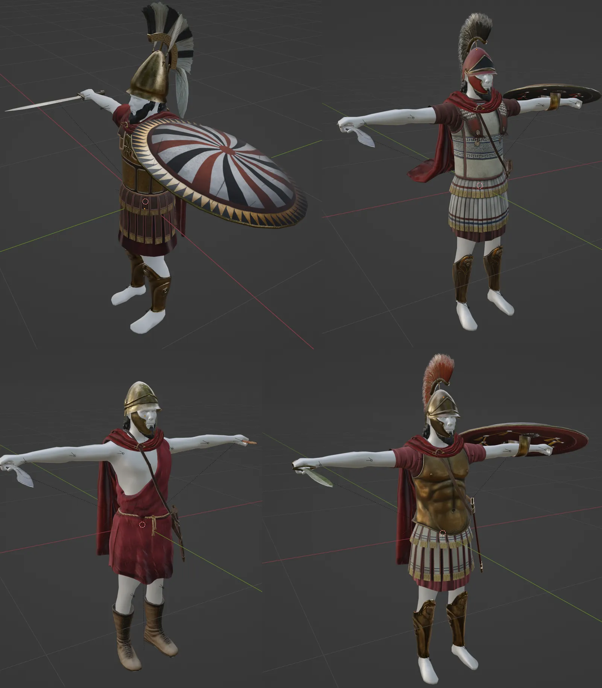
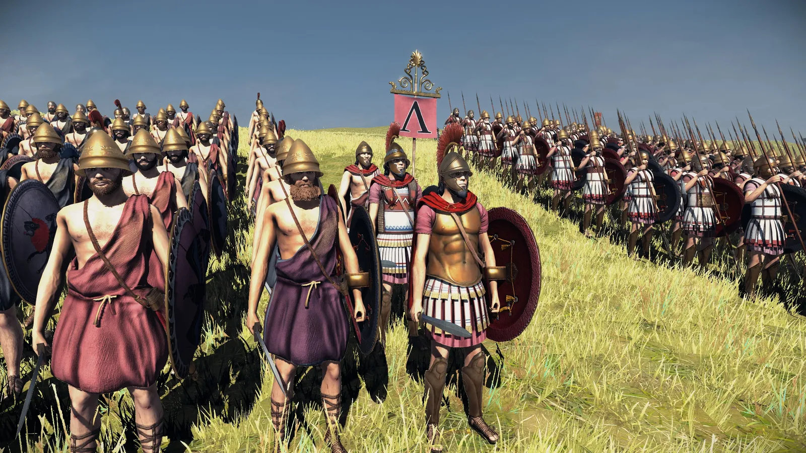
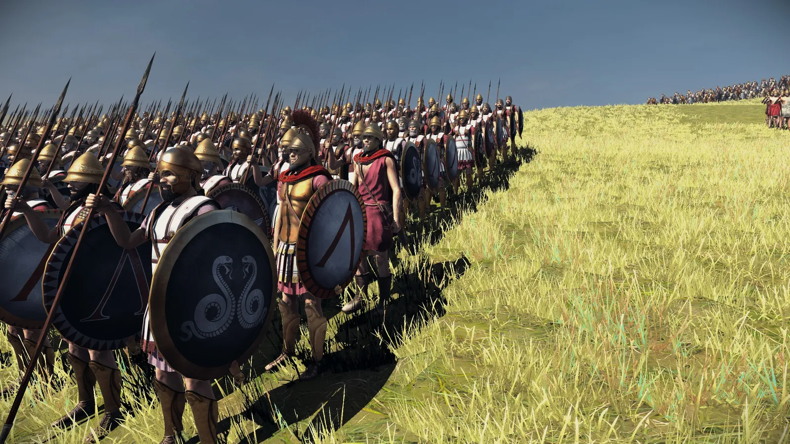
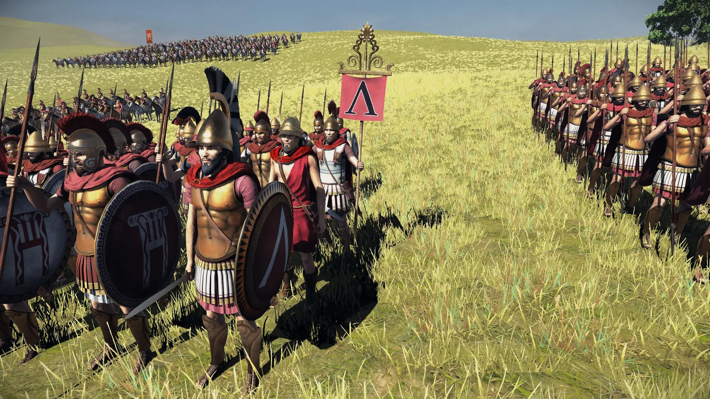
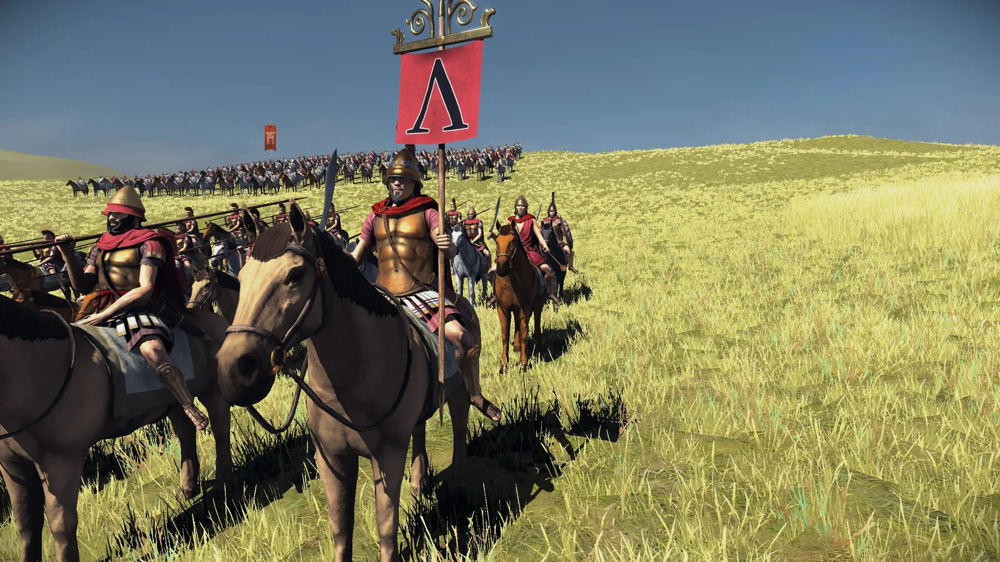
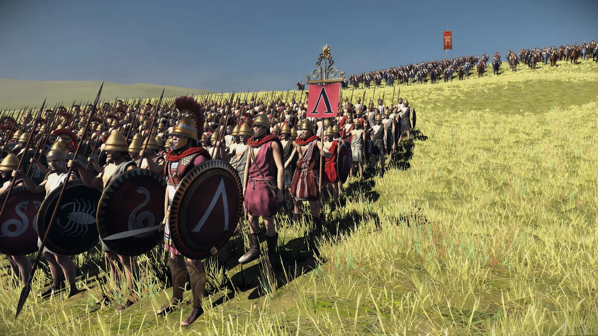
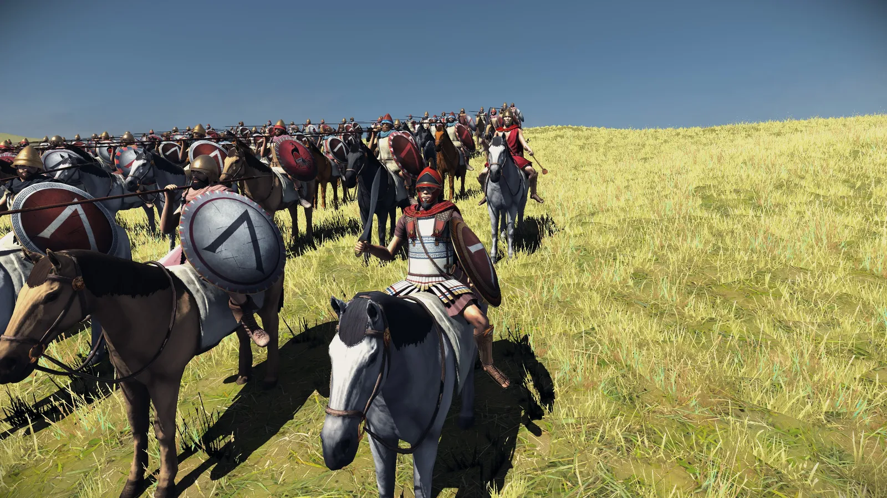
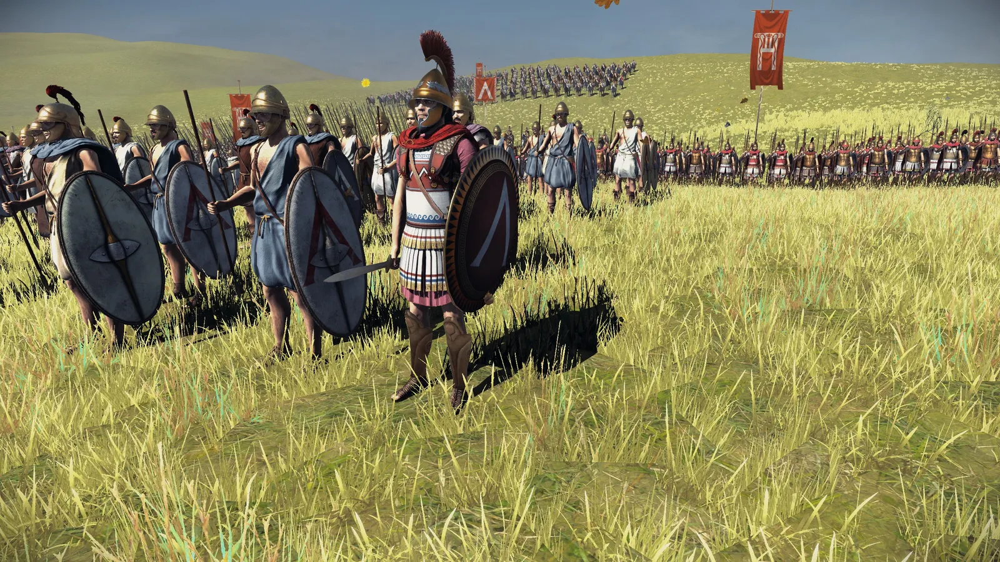
This dedication to visual authenticity and commanding presence naturally extends to the strategy map. Your Spartan generals and family members will now be represented by new models that reflect their martial heritage and leadership status. We envision the figures you guide across the territories of Greece and beyond radiating the same palpable sense of Spartan gravitas and authority that their battle map counterparts will exude in the heat of combat. Imagine your faction leader, a true descendant of Leonidas, not just as a game piece, but as an extension of Spartan will on the campaign.
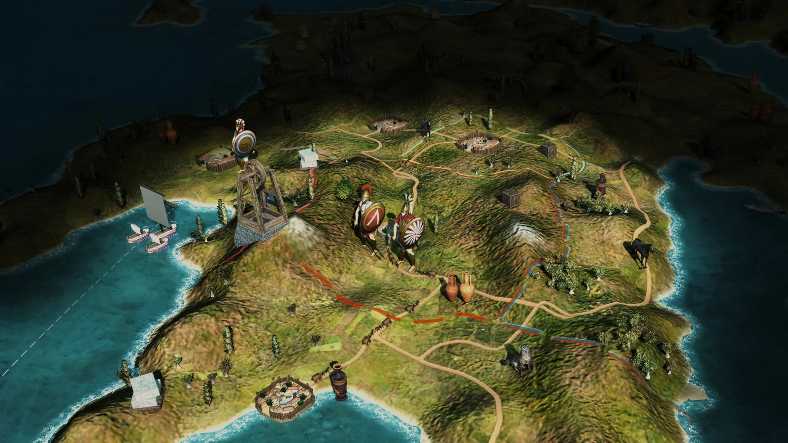
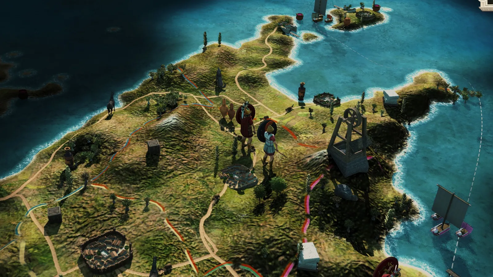
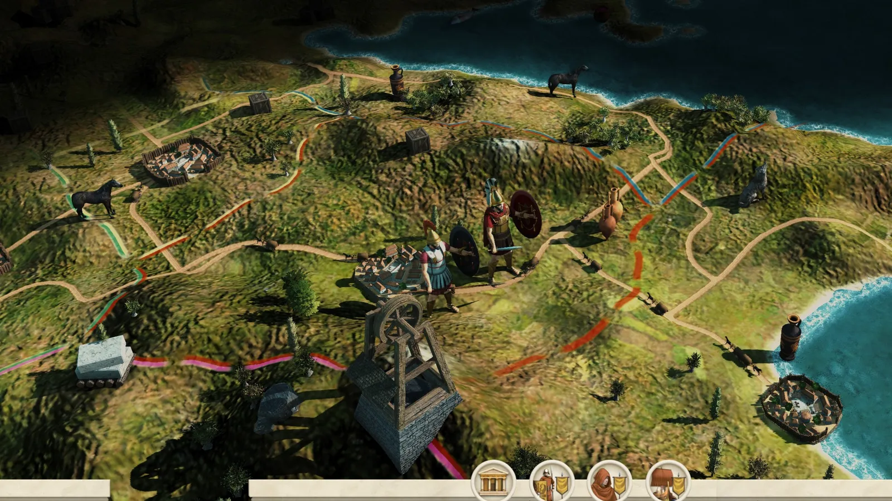
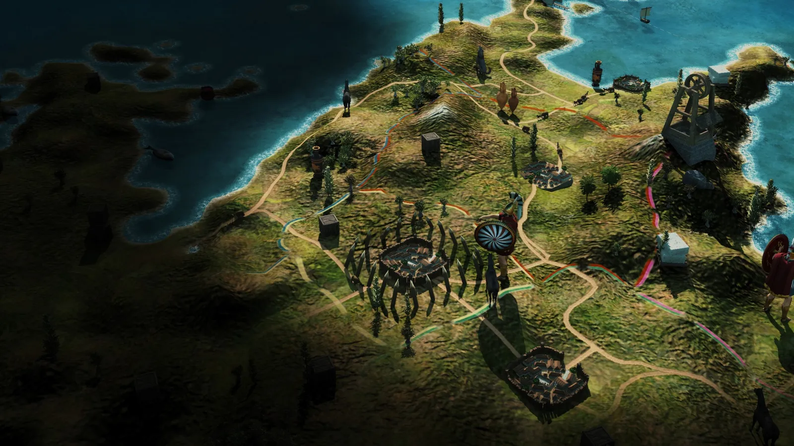
Presenting these re-imagined Spartan leaders marks a milestone in our journey, and honestly, we couldn't be more excited about how they're bringing the faction to life. We truly believe these commanding figures will elevate your campaigns, making every battle led by a Spartan general a more impactful and memorable experience. What are your first impressions? What are your first impressions? Which details of their new panoply catch your eye? Drop your thoughts, insights, and feedback below – it's the fuel that drives our progress!
Until our next dispatch from the front lines of development, may your leaders be bold, your strategies cunning, and your phalanx unbreakable!